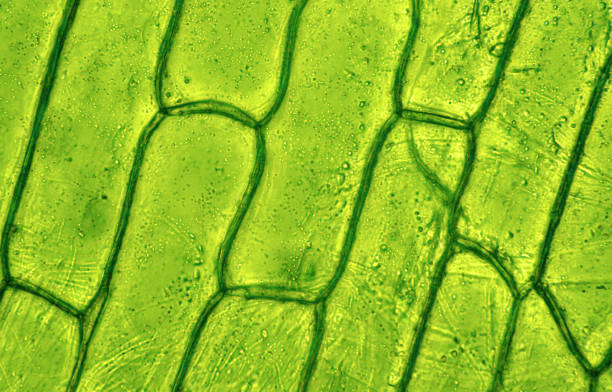
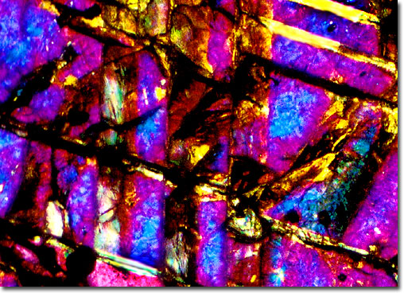

هذا المكان الساحر للأطفال الفضوليين! نكتشف العالم المجهري المخفي في الرمال، والماء، والأوراق باستخدام المجهر، ثم نحوله إلى فن ومرح! انضم إلينا في رحلة الرمال وكن عالِمًا صغيرًا!
Welcome to the dreamy world of tiny explorers! Here, kids uncover the microscopic secrets hidden in sand, water, and leaves using a microscope—and turn science into beautiful art and storytelling. Ready to become a sand traveler?
هنا نعرض صوراً مذهلة للمواد التي فحصناها تحت المجهر—من حبات الرمل إلى قطرات البحر، سترى العالم كما لم تره من قبل!
Here we reveal magical images of materials viewed under the microscope—from grains of desert sand to droplets of Gulf seawater. You’ll see a world you never knew existed!


كل صورة تخبرنا بقصة—هل رأيت التفاصيل في الورقة؟ هذا يدل على الحياة! وأنماط الياقوت؟ هذا جمال مخفي! دعنا نفسر كل صورة معاً.
Plant Cell (ورقة نبات): This image shows tiny plant cells that store water and help the leaf "breathe." The round green structures you see might be chloroplasts—where the magic of photosynthesis happens! Look closely: you might spot tiny veins that move nutrients, just like highways!
Sapphire Structure (هيكل الياقوت): This crystal shows us a rigid, beautiful pattern made by nature over thousands of years. The shapes and lines you see are actually how atoms arrange themselves in a mineral. Isn’t it amazing how nature creates art even at the tiniest levels?
حمّل صورتك المجهرية وحوّلها إلى عمل فني باستخدام الذكاء الاصطناعي. اجعل العلم لوحة فنية!
Upload your microscope photo and turn it into art using a fun AI-style filter. Let science paint its own picture!
Try uploading an image to see your scientific art!
حمّل أوراق العمل الرائعة الخاصة بنا وابدأ مغامرتك العلمية من المنزل!
Download our exciting activity sheet and begin your own microscopic adventure at home!
Download Sand Travelers Activity Sheetأن تصبح رحّالة الرمال يعني أنك عالم صغير، وفنان مبدع، وصوت للطبيعة! مشروعنا يعلمك عن بيئتنا، يربطك بكويتنا الجميلة، ويجعلك تكتشف المدهش في الأشياء الصغيرة. من المدارس إلى المنازل، هذا المشروع يزرع الفضول، والإبداع، والحب للطبيعة.
Being a Sand Traveler means you're a tiny scientist, a creative artist, and a voice for nature! Our project teaches about the environment, connects you with Kuwait’s beauty, and makes you discover wonder in the smallest things. From schools to homes—it plants curiosity, creativity, and care.